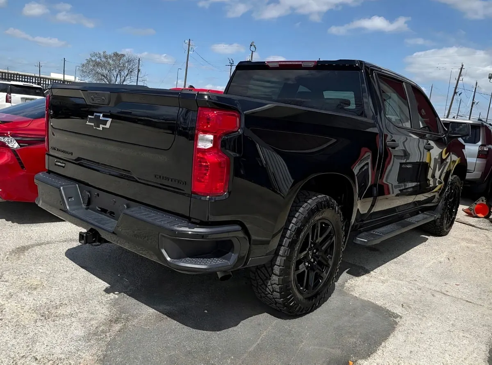

2024 Chevrolet Silverado Custom
Negro • ID CCH-470

1/6Datos generales
| Año | 2024 |
|---|---|
| Marca | Chevrolet |
| Modelo | Silverado Custom |
| Tipo | Troca |
| Color | Negro |
| Millas | 13,000 millas |
| Tracción | Por confirmar |
Especificaciones del modelo
| Motor | 2.7L TurboMax I4 (estándar en Custom, RST y Trail Boss; opciones: 5.3L V8, 6.2L V8, 3.0L Duramax diésel; el ZR2 trae 6.2L o diésel) |
|---|---|
| Potencia | 310 hp (2.7L; 355 el 5.3L, 420 el 6.2L, 305 el diésel) |
| Torque | 430 lb-pie (2.7L; 383 el 5.3L, 460 el 6.2L, 495 el diésel) |
| Transmisión | Automática 8 velocidades (2.7L) o 10 velocidades (V8 y diésel) |
| Tracción del modelo | RWD o 4WD (varía según unidad) |
| Consumo (MPG) | Ciudad: varía: 18 (2.7L), 16 (5.3L), 23 (diésel), 15 (6.2L). Carretera: varía: 22 (2.7L), 22 (5.3L), 29 (diésel), 20 (6.2L) |
| Combustible | Gasolina (diésel opcional) |
| Remolque máximo | 13300 (máximo configurado; 8800 en ZR2; varía según unidad) |
| Asientos | 3-6 |
| Carrocería | Pickup |
Datos típicos de este año y modelo, tomados de fuentes públicas (fabricante, KBB, Edmunds). El motor, la tracción y el equipamiento exactos de esta unidad los confirma el dealer.
Ideal para
Para quien necesita una troca para trabajo y para el día a día.
Año, millas y características salen de los datos del inventario; confirma los datos exactos de esta unidad con el dealer. Esta ficha no muestra precios: el dealer los da por escrito.